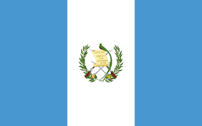

Étape 09 : Guatemala 
Neuvième étape du Trophée Jules Verne, la traversée du Guatemala propose un enchaînement de cols très exigeants. Cette étape de montagne, qui mêle de longues ascensions et des pentes abruptes, promet des écarts significatifs au classement général. L’arrivée à Ciudad est jugée après une série de difficultés en altitude, dont une montée à plus de 2000 mètres.